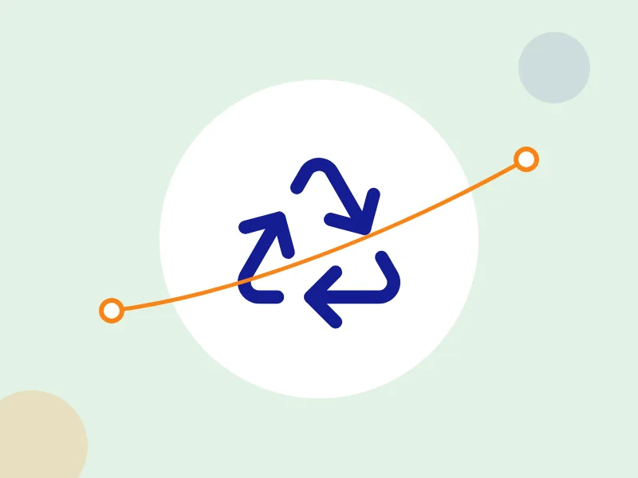
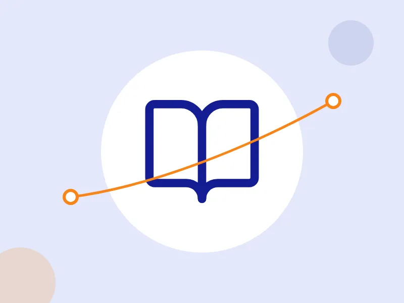
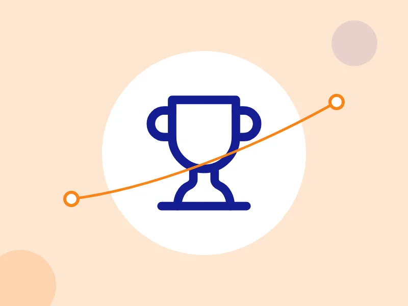
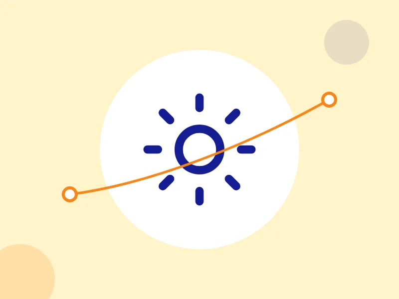
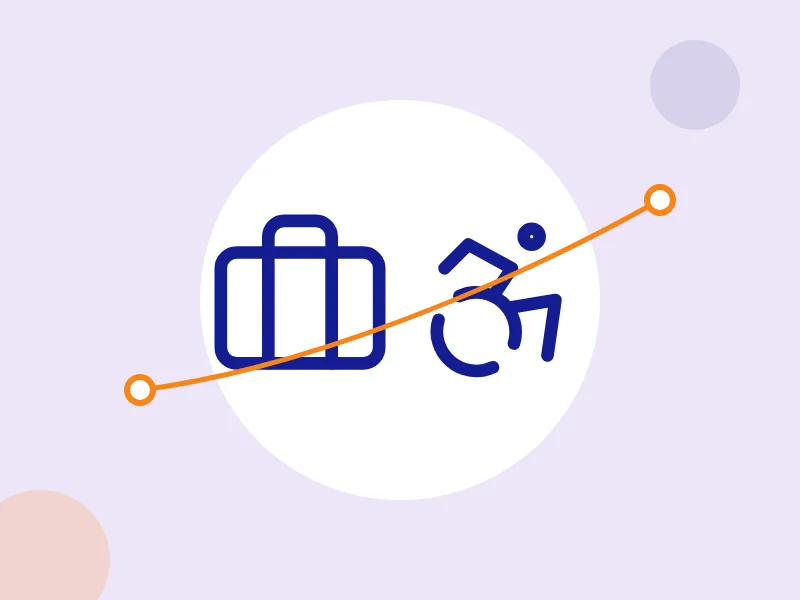
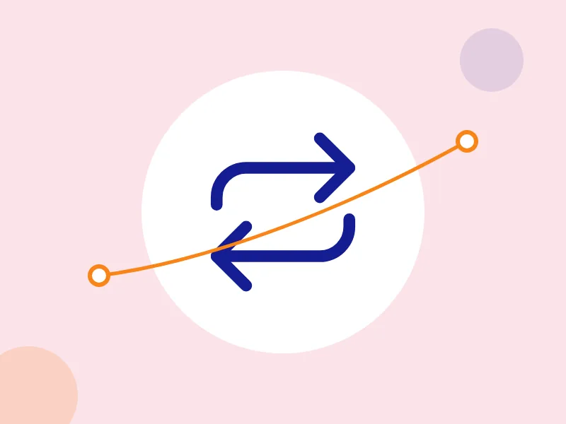

Quem somos?
Somos uma plataforma que aproxima ONGs de pessoas e empresas que querem ajudar.
Nossa história
A ConexãoDoBem nasceu em 2026, como projeto de alunas do curso de Análise e Desenvolvimento de Sistemas da Fatec São Caetano do Sul.
Pesquisando sobre voluntariado, a equipe percebeu um problema com dois lados. De um lado, muitas ONGs dependem de voluntários para continuar funcionando. Do outro, muita gente quer ajudar, mas não sabe por onde começar. E os jovens são o grupo que menos participa.
A ideia foi criar um lugar que reúna essas duas pontas e que ofereça aos estudantes um incentivo a mais: um certificado das horas realizadas, que pode ser aproveitado como atividade complementar.
Missão, visão e valores
-
Missão
Conectar ONGs de impacto social e ambiental a voluntários, doadores e empresas, tornando mais fácil ajudar.
-
Visão
Ser referência em voluntariado para jovens no ABC Paulista, aproximando estudantes das causas da sua região.
-
Valores
- Solidariedade
- Inclusão e acessibilidade
- Transparência
- Sustentabilidade
- Respeito às ONGs e aos voluntários
Galeria: causas que apoiamos
Algumas das áreas em que as ONGs parceiras atuam.
-

Coleta seletiva Voluntários ajudam a separar materiais recicláveis e a orientar a comunidade. Fonte: ilustração criada para o projeto, com ícones Lucide (licença ISC). -

Reforço escolar Aulas de apoio, presenciais ou on-line, para crianças e adolescentes. Fonte: ilustração criada para o projeto, com ícones Lucide (licença ISC). -

Esporte adaptado Apoio em treinos e eventos para atletas com deficiência. Fonte: ilustração criada para o projeto, com ícones Lucide (licença ISC). -

Energia renovável Oficinas sobre energia solar em escolas e comunidades. Fonte: ilustração criada para o projeto, com ícones Lucide (licença ISC). -

Empregabilidade PCD Mentorias de currículo e entrevista para pessoas com deficiência. Fonte: ilustração criada para o projeto, com ícones Lucide (licença ISC). -

Consumo consciente Feiras de troca que dão nova vida a roupas, livros e brinquedos. Fonte: ilustração criada para o projeto, com ícones Lucide (licença ISC).
Acessibilidade e inclusão
Pessoas com deficiência são público prioritário da ConexãoDoBem, tanto como voluntárias quanto como atendidas pelas ONGs. Seguimos a Lei Brasileira de Inclusão (Lei nº 13.146/2015) e as recomendações de acessibilidade para a web (WCAG).
-
No site
- Navegação completa pelo teclado (Tab e Shift+Tab para andar, Enter para abrir links, Espaço para marcar opções), com contorno visível no item em foco.
- Barra no topo com botões para diminuir, restaurar e aumentar a fonte, e para ligar o alto contraste. A escolha fica salva no navegador.
- Formulários com mensagens de erro em português ao lado de cada campo e rascunho salvo no navegador, para não perder o que foi digitado.
- Link "Pular para o conteúdo principal" no início de cada página.
- Textos alternativos em todas as imagens que têm informação.
- Cores testadas para ter contraste suficiente.
- Vídeo com legendas e áudio com descrição em texto.
- Idioma da página definido como português, para leitores de tela.
- Layout que se adapta a celular, tablet e computador.
- Animações desligadas para quem prefere menos movimento.
-
Nas oportunidades
- Toda oportunidade informa as condições de acessibilidade do local.
- Atividades remotas permitem participar sem deslocamento.
- ONGs de esporte adaptado e de empregabilidade PCD têm destaque.
- Formulários com rótulos claros e mensagens de erro visíveis.
Encontrou alguma barreira no site? Conte para a gente.